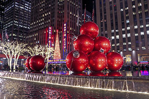
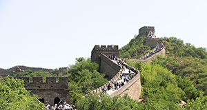
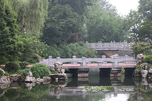
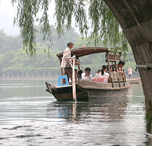
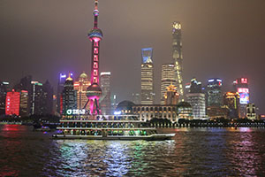

Photos
I have had an interest in Photography since high school but it has become more so to my liking these past few months. This is a few of my works and I hope to take many better ones in the future.
Rockefeller Center

This is Rockefeller Center during the week of Christmas. The scenary was breathtaking and I only went in the first place because my mom had never seen it before and she wanted to check it out. I thank her for making me take her because I was able to get this shot and show her more of NYC around. I had fun and this allows me to remember one of the good times I spent with her.
The Great Wall of China

This is a picture of the Great Wall of China in Beijing, China. I took when I was touring China for a while, and visiting a friend, during the summer of 2018. My friend and I walked all the way up to the 8th tower. It was definitely a memory I will never forget and had a beautiful scenary that made up for the tremendous heat given off that day.
The West Lake

This is the West Lake in Zhengzhou, China. It is an indredible tourist place filled with a lot of greenery and history. This bridge reminded me of what historical dramas usually capture so I had to take this picture.
Boating in Zhengzhou

This is a boat/canoe in Zhengzhou that I took while my friends and I were on one ourselves. We are in the process of going through an arch and I saw the people in front of us and had to take the picture. The leaves coming down from the top, and the side of the arch allows some asthetic to come into the shot, but I also wanted to get the hard-working man. It just really spoke to me so I appreciate the angle I was given.
Waitan

This is Shanghai's Waitan, also known as the City's Night Lights. My friend and I were staying at a hotel nearby and we waited until the sky turned dark to get the real experience of this scenery. It was truly amazing and it reminded me of NYC's Time Square as it makes you feel amazing about the architecure and colors all around.